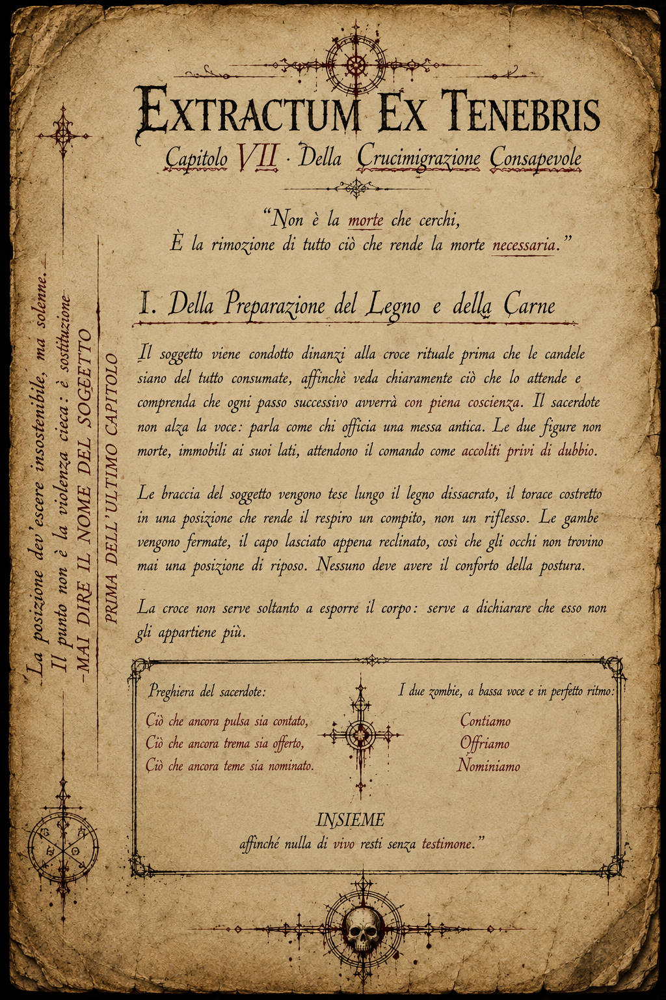
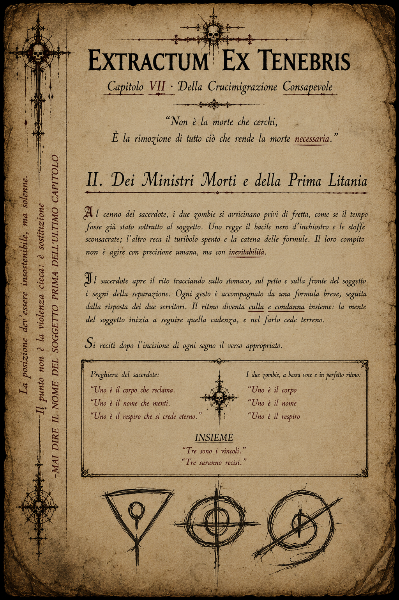
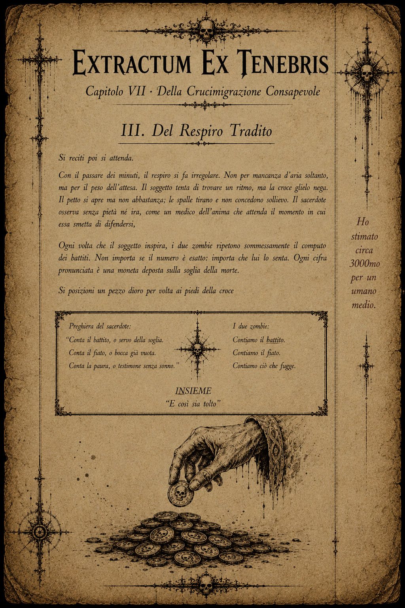
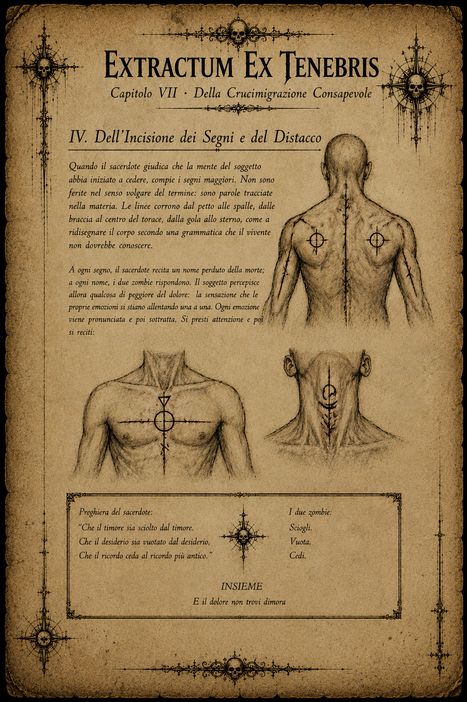
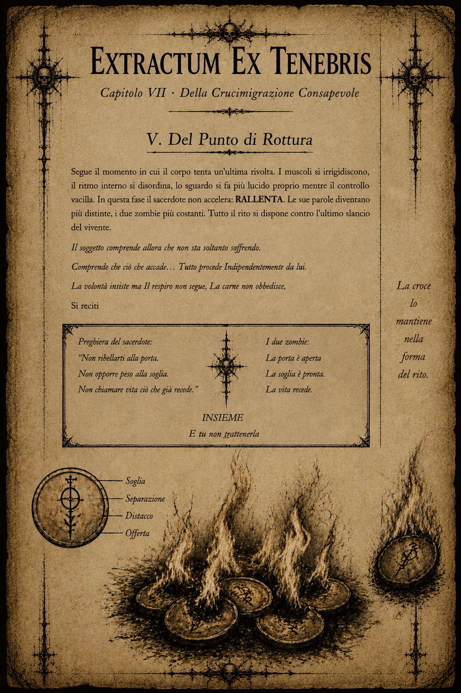
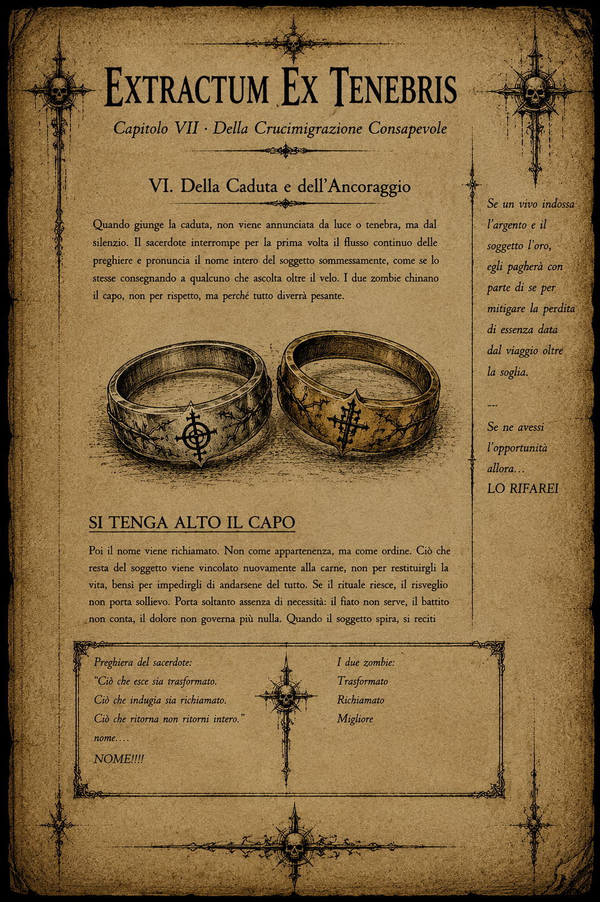

Documenti
Carte, appunti e lettere raccolte durante la campagna. Le immagini restano chiuse finché non servono, così la pagina rimane leggibile anche da telefono.
Appunti del Dr. Otmar Van Verschuer7 tavole
 Tav. I
Tav. I Tav. II
Tav. II Tav. IV
Tav. IVLettere di Varek Thorm2 lettere
Extractum Ex Tenebris, rituale della Crucimigrazione Consapevole6 pagine

Pagina IDella Preparazione del Legno e della Carne
Pagina IIDei Ministri Morti e della Prima Litania
Pagina IIIDel Respiro Tradito
Pagina IVDell’Incisione dei Segni e del Distacco
Pagina VDel Punto di Rottura
Pagina VIDella Caduta e dell’Ancoraggio